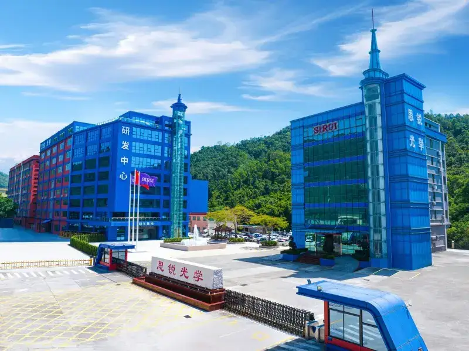
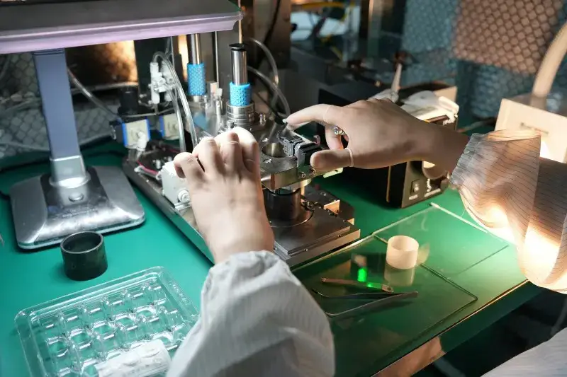
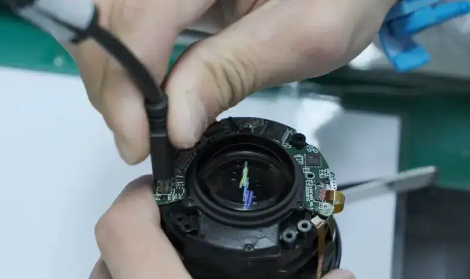
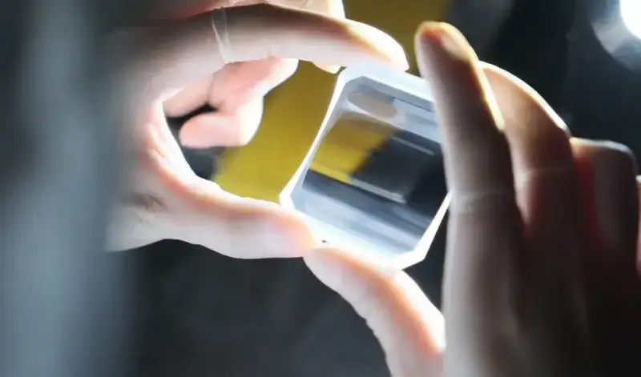
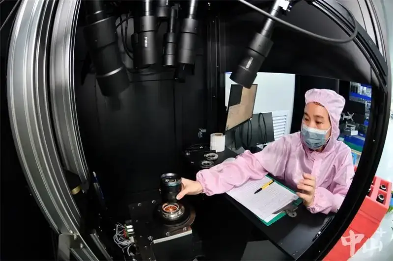

Recently, Sirui Optical, based in Wuguishan Subdistrict, made the national list of specialized, refined, distinctive, and innovative Little Giant enterprises. The honor recognizes Sirui Optical's leading position in the imaging niche. It also marks that the company ranks at the top of the industry in innovation, market share, core technology, and service at key points of the supply chain.
Since Sirui Optical was founded in 2001, it has grown from a tripod maker into a company that designs, makes, and sells professional photo and video gear. After it moved into optics in 2014, the company invested 300 million yuan of its own funds to build its own optical R&D base. It now ranks at the top of the optical imaging industry. It holds 259 granted patents worldwide, including 70 invention patents. This shows its strong R&D power.
With strong government support and investment policy, Sirui Optical moved into Wuguishan in 2006. Over 18 years, its staff grew from 68 people to more than 1,100. Its industrial land grew from 11 mu to 29 mu. The company expects industrial output and sales to exceed 450 million yuan by 2024, and to pass 1.5 billion yuan in 2026.
Sirui Optical grew fast because it keeps innovating and upgrading. Since it began optical R&D in 2014, the company moved from traditional camera support systems to the design and production of interchangeable optical lenses. It made a major breakthrough in large-aperture glass aspheric molding. It now replaces imports, and its own lenses are about 20% lighter than similar brands. It offers lighter, high-performance lenses to the market.


To keep building its technical strength, Sirui Optical works closely with universities such as Beijing Institute of Technology and Changchun University of Science and Technology. It also brings in international optical experts and top domestic talent. Its R&D center now has real scale, with a strong team of industry scholars and optical experts.

In production, Sirui Optical now controls the whole chain: cold glass processing, glass aspheric molding, glass lens coating, and lens assembly. It is also moving into outdoor optics, and plans to launch those products in January next year.

In addition, to keep up with its fast-growing business, Sirui Optical upgraded its U9 smart warehouse and finance system. This links the production and finance systems without a break, and raises the level of data-driven smart management across the chain.
Looking ahead, Sirui Optical will keep holding itself to the Little Giant standard. It aims to stand out in the tough competition with well-known international lens brands such as Zeiss, Sigma, and Tamron. Its goal is to win a place in the 100-billion-yuan market, and to reach a market share of more than 1 billion yuan by 2025.